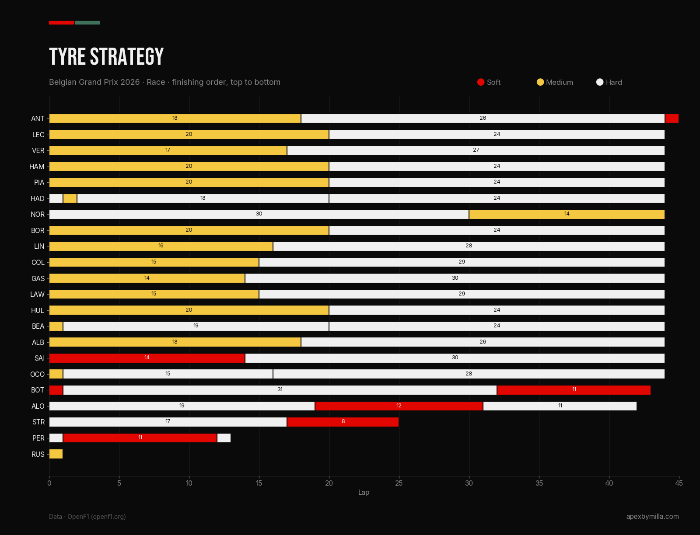
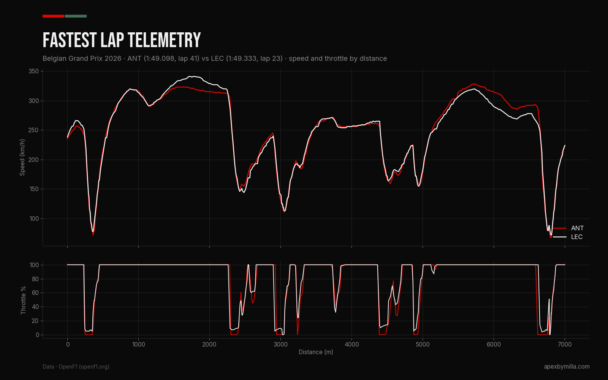
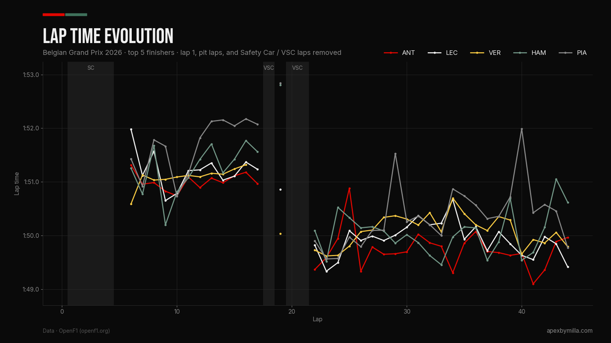
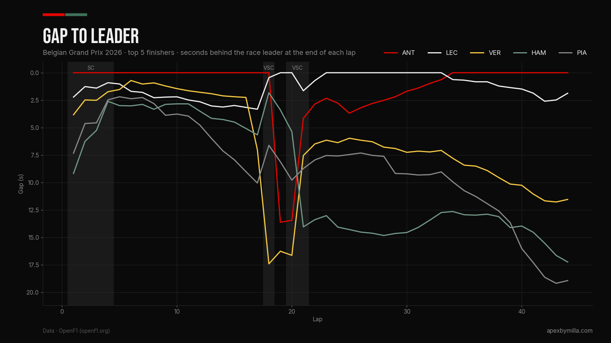

Kimi Antonelli won the 2026 Belgian Grand Prix from pole by 1.952s, his sixth win of the season. Ferrari pitted both cars under a Virtual Safety Car on Lap 20 to put Charles Leclerc in front, but Antonelli was around a quarter of a second per lap quicker on the Hards and passed him on Lap 34. George Russell retired on the opening lap after a deployment loss and contact with Lewis Hamilton at Turn 6, and Isack Hadjar climbed from twenty-first to sixth with a three-stop strategy.
Race Overview
Spa-Francorchamps is the longest lap on the calendar, and for almost all of its 44 laps Kimi Antonelli and Charles Leclerc were separated by only a few seconds. Antonelli won the 2026 Belgian Grand Prix from pole by 1.952s, his sixth win of the season and his first since Monaco, after Ferrari used a Virtual Safety CarVirtual Safety Car (VSC)A neutralisation where every driver holds a set delta time instead of following a physical Safety Car.→ Apex Index to put Leclerc in front for the middle part of the race.
Max Verstappen got the best launch from second and led through the famous Eau Rouge and Raidillon sequence at Turns 2 to 4, but his lead only lasted as far as the Kemmel Straight, where Antonelli went back past him. George Russell's start was much worse. His Mercedes lost boost out of Turn 1, and without full deployment he had nothing to defend with, so Leclerc and Lewis Hamilton both went by. Russell then tried to fight back around the outside of Hamilton, but the two touched at Turn 6, and his race was over in the gravel before he had completed a single lap. Hamilton was given a five-second time penaltyTime PenaltySeconds added to a driver's race time by the stewards, served at a pit stop or added at the end.→ Apex Index for causing the collision.
The Safety CarSafety CarA road car that leads the field at a controlled speed while a hazard is cleared. Overtaking is banned.→ Apex Index came out on Lap 1 and stayed out until the end of Lap 4. Several cars used it to pit, including Isack Hadjar, who stopped on Laps 1 and 2 to cycle through his compounds, and both Haas drivers, who had picked up punctures in the opening lap. Once racing resumed on Lap 5, Verstappen passed Leclerc for second on Lap 6, and two laps later Leclerc and Oscar Piastri made contact at Turn 5, which damaged the floor of Piastri's McLaren. The stewards took no further action, and Hamilton passed Piastri for fourth on Lap 9.
In the end, the pit stops decided the race. Verstappen came in from second on Lap 17, and a lap later a Virtual Safety Car was called, although it lasted just 33 seconds. Mercedes reacted by pitting Antonelli on Lap 18 to cover Verstappen, but by the time he reached the pit lane the VSC was already over, so he paid the full cost of a green-flag stop. Ferrari were luckier. A second VSC came out on Lap 20, both Ferraris pitted under it, and Leclerc rejoined in front of Antonelli. Hamilton served his penalty during the same stop and was released into the path of a mechanic, who was unhurt, and Ferrari were fined €30,000 after the race. Antonelli summed it up afterwards, saying, "We lost first place with a VSC but then we managed to make our way back."
For two laps the race had an unexpected leader. Lando Norris, who started thirteenth and was still on his first set of Hards, led Laps 21 and 22 before Leclerc went past him at the end of the Kemmel Straight on Lap 23. Antonelli cleared Norris on Lap 26 and spent the next seven laps chasing Leclerc down, cutting a gap of around three seconds to half a second by Lap 33. He took the lead back on Lap 34 and controlled the gap from there, winning by 1.952s. Verstappen finished third, 11.586s behind, while Hamilton recovered from his penalty and the damage to his car to pass Piastri for fourth on Lap 40. Further back, Hadjar finished sixth after starting twenty-first, just ahead of Norris.
Practice
FP1
Red Bull set the early pace at Spa. Verstappen topped the first session with a 1:47.070, 0.145s ahead of Hamilton and 0.207s ahead of Leclerc, with Hadjar fourth to put both Red Bulls in the top four. That pace came on an older specification rear wing, which Red Bull went back to after Verstappen's crashes in Austria and Silverstone. The teams were running very different programmes. Hadjar was the only driver to use the Soft in the opening stage, and Norris spent his early laps collecting data with aero rakesAero RakeA frame of pressure sensors fitted to the car in practice to measure the airflow and check it against the wind tunnel and CFD.→ Apex Index rather than chasing a lap time.
Mercedes were further back, with Antonelli sixth, 0.533s off the pace, and Russell eighth, after both drivers switched to long runs. Piastri reported a hydraulic pressure issue late in the session and was told to drive slowly back to the pits. Jak Crawford drove Fernando Alonso's Aston Martin in the session and finished twenty-second.
FP2
Rain showers fell between the two Friday sessions, but FP2 ran on a dry track in sunny conditions. Antonelli was fastest with a 1:45.944, 0.190s ahead of Norris and 0.472s ahead of Verstappen, and he was the first driver to go below 1:46. Hamilton was fourth, 0.747s back, while Leclerc was only eleventh.
The session was stopped twice. The first red flag came out approaching the 15-minute mark to clear gravel from the track after Verstappen dipped a wheel into the gravel at Turn 14. The second came in the final 15 minutes, when Pierre Gasly lost the rear of his Alpine on the exit of Turn 13 and hit the barrier, which tore the rear wing off the car. Alpine's Steve Nielsen said afterwards, "Pierre is fine, the car is not fine," and added that the team had already planned to change the power unit on that car overnight.
McLaren had a frustrating afternoon with Piastri, who missed the first 20 minutes while the team repaired a hydraulic leak and only managed 11 laps. Russell's problem was harder to explain. He was eighth, 1.285s off his teammate, and when he radioed that "the rears felt too cold, but not 1.2s cold," it suggested that tyre temperature was not the whole story.
FP3
FP3 followed the same pattern, with Antonelli on top again with a 1:45.990. Norris and Verstappen were only 0.139s and 0.148s behind him, but Russell, in fourth, was 0.367s back, and at one stage of the session he lost six tenths in the first sector alone. He reported a lack of straight-line speed, which turned out to be the first sign of the problem that would affect him for the rest of the weekend.
Hamilton set the fifth-fastest time, but he lost the rear through the left-hander at Turn 13 on his final lap, the same corner where Gasly crashed in FP2, and hit the barrier. Ferrari had to rebuild the suspension, the floor, and the rear wing on his car before qualifying. Hadjar also had a difficult session, stopping at the pit lane exit and then aborting a flying lap after reporting, "nothing is ready, everything is too cold."
Starting Grid & Qualifying
Antonelli took pole with a 1:44.361, 0.317s ahead of Verstappen and 0.440s ahead of Norris, while Russell was fourth, 0.508s back, in the other Mercedes. Leclerc and Hamilton were fifth and sixth, separated by only 0.002s, with Piastri seventh. Antonelli said, "It's great to be on pole position, especially at a track where I struggled last year."
Verstappen's lap was helped by a tow from his teammate. Hadjar, who was already due to start from the back because of his grid penalty, gave Verstappen a slipstreamSlipstreamThe pocket of lower-drag air behind a car that a following driver can sit in to gain straight-line speed.→ Apex Index in Q3, and Verstappen said "we gained around three tenths of lap time" from it. Hadjar did not set a Q3 time of his own and explained that "It's a little difficult to give a tow with these regulations, not knowing how the engine would behave." Leclerc's session was also affected by Hadjar, because he lifted on his second Q3 lap when a yellow flag was waved in the pit lane for the Red Bull, and he said there "may have been a few hundredths to gain there."
Q3 was also briefly stopped to clear gravel from the track, and its start had already been delayed after Nico Hulkenberg stopped on track with a hydraulic problem as Q2 ended, following gearbox shift issues from early in the session. Further down the order, Arvid Lindblad qualified eighth with the Racing Bulls upgrade package, and Gabriel Bortoleto was ninth for Audi. Liam Lawson missed Q3 by 0.038s in eleventh, and Alexander Albon missed Q2 by only 0.007s.
The starting grid looked very different from the qualifying order, because five drivers took grid penaltiesGrid PenaltyPlaces a driver drops on the starting grid, most often for using more power unit elements than the season allocation allows.→ Apex Index for using additional power unit elements. Norris lost the most from a strong session, dropping ten places from third to thirteenth, while Carlos Sainz went from fifteenth to nineteenth and Lance Stroll from twenty-second to twentieth. Hadjar and Alonso were sent to the back, starting twenty-first and twenty-second. Because of this, Russell moved up to third, Leclerc to fourth, and Hamilton to fifth, with Lindblad, Bortoleto, and Lawson starting seventh, eighth, and ninth.
Technical Breakdown
Spa-Francorchamps measures 7.004 km, and two long full-throttle sections, from Turn 1 to Turn 5 and from Turn 15 to Turn 18, make up a large part of it. In the telemetry from the fastest race laps of Antonelli and Leclerc, the throttle was fully open for around 65% of the lap. With close to half of the power unitPower UnitThe complete F1 engine package, made up of the combustion engine and the electrical system that recovers and deploys energy.→ Apex Index's output now coming from the electrical sideERS (Energy Recovery System)The battery, control electronics, and MGU-K that recover energy under braking and deploy it as extra power.→ Apex Index, how and where each car deployed its energy became one of the main technical stories of the weekend, and Mercedes, Red Bull, McLaren, and Racing Bulls all reported deployment or straight-line speed issues at some point.
Compound Choice
Pirelli brought the C2, C3, and C4 as the Hard, Medium, and Soft, a consecutive selection, unlike in 2025, when Pirelli skipped a step and brought the C1, C3, and C4 to Spa. Each driver had two sets of Hards, three sets of Mediums, and eight sets of Softs, and with a dry race, every driver had to use at least two different compounds.
Before the weekend, Pirelli said that "the two hardest compounds in the range are expected to be the protagonists in Sunday's race," and the race followed that prediction, with the Medium C3 and Hard C2 used for most stints. Conditions were also much cooler than in June, when Pirelli recorded track temperatures above 55°C during the 24 Hours of Spa. During the Grand Prix, the air temperature stayed between 17°C and 19°C and the track temperature between 28°C and 34°C, which most likely reduced the thermal degradationThermal DegradationLoss of tyre grip caused by the rubber overheating beyond its working window.→ Apex Index that Pirelli had been concerned about.
Tyre Strategy
Fifteen drivers started on the Medium C3, while Norris, Hadjar, Alonso, Stroll, and Sergio Perez started on the Hard C2, and Sainz and Valtteri Bottas started on the Soft C4. F1.com's race report said Pirelli had expected two-stop races because of thermal degradation, but the whole top five made only one stop, all switching from the Medium to the Hard between Laps 17 and 20.
The two VSCs shaped who gained from their stops. Verstappen pitted on Lap 17, just before the first VSC, and Antonelli on Lap 18, just after it ended, so both made full green-flag stops. Leclerc, Hamilton, Piastri, Hadjar, Bortoleto, and Hulkenberg all pitted under the second VSC on Lap 20, which cost them less time in the pit lane relative to the cars on track. Audi recorded a 2.1-second stop for Bortoleto, which helped him come out ahead of the Racing Bulls.
Norris was the main exception, running 30 laps on his starting set of Hards before switching to the Medium on Lap 30, and his stop was slow because of a technical issue. Hadjar ran the most unusual strategy of the race. He started on the Hard, pitted for Mediums on Lap 1, and then went back onto the Hard on Lap 2 under the Safety Car, with the aim of reaching the end on one set. That turned out to be too ambitious, so he made a third stop on Lap 20 under the VSC for a set of Hards that was one lap old rather than new, most likely the set he started the race on. He said afterwards, "From P21 to P6 is not easy, but the strategy was perfect and the pace in the car was strong."

Aerodynamics & Setup
Spa rewards a low-drag setup on the long straights, but the middle sector, from Turn 6 to Turn 14, still needs downforce, so every team had to find a compromise. McLaren brought a new rear wing for the circuit, and Andrea Stella said, "As a team we optimised the package for Belgium, with our new wing matching the drag and downforce needs of this circuit." Norris's pace supported this, since he qualified third and set the fastest lap of the race, although that lap came on fresher Mediums at the end.
Red Bull were short on straight-line speed all weekend. Verstappen said after qualifying, "We have just been lacking a bit of straight-line speed compared to the other teams," and Laurent Mekies went further, admitting, "We have been a long way off the straight-line performance Mercedes has shown this weekend."
Ferrari had a different problem. After Hamilton's FP3 crash and the rebuild of his car, he said, "The car lacked some stability in qualifying, and we knew that the first and last sectors would be our biggest challenge." Leclerc was more direct about the circuit, saying, "This track doesn't really suit the characteristics of our car."
Racing Bulls brought an upgrade package for Lindblad's car only, and Lindblad said, "the new upgrade is working really well," after qualifying eighth. Lawson said the same parts would reach his car the following week. Meanwhile, Piastri's race was affected by the floorFloorThe underside of the car, which produces most of its downforce through the shaped tunnels underneath.→ Apex Index damage from his contact with Leclerc on Lap 8, which Stella said cost "between two and three tenths of a second" per lap in lost downforce.

Pace & Performance
The lap times show why Antonelli was able to win the race back on track. The fastest lap of the race went to Norris, who set a 1:48.890 on the final lap, on Mediums that were 14 laps old while the cars around him were on Hards that were more than 20 laps old. Antonelli's best was a 1:49.098 on Lap 41, and Hadjar was third fastest with a 1:49.298, also on the final lap. Leclerc's best, a 1:49.333, came on Lap 23, his third lap on new Hards.
| Pos. | Driver | Fastest lap | On lap | Pit stops (lap) | Stop times | Gap at flag |
|---|---|---|---|---|---|---|
| P1 | Antonelli (Mercedes) | 1:49.098 | 41 | 18 | 23.093s | WINNER |
| P2 | Leclerc (Ferrari) | 1:49.333 | 23 | 20 | 23.164s | +1.952s |
| P3 | Verstappen (Red Bull) | 1:49.618 | 23 | 17 | 23.128s | +11.586s |
| P4 | Hamilton (Ferrari) | 1:49.454 | 33 | 20 | 32.201s* | +17.245s |
| P5 | Piastri (McLaren) | 1:49.562 | 23 | 20 | 23.292s | +18.988s |
| P6 | Hadjar (Red Bull) | 1:49.298 | 44 | 1, 2, 20 | 24.156s, 22.997s, 24.727s | +23.307s |
| P7 | Norris (McLaren) | 1:48.890 | 44 | 30 | 28.314s | +24.014s |
* Includes Hamilton's five-second penalty for the collision with Russell. Stop times are total pit lane time from the F1.com pit stop summary.
Across the second stint, from Lap 23 to the flag, Antonelli's typical green-flag lap was a 1:49.698, against a 1:49.952 for Leclerc, a 1:50.037 for Hadjar, a 1:50.048 for Hamilton, and a 1:50.096 for Verstappen. That difference of around a quarter of a second per lap is what allowed Antonelli to close a gap of around three seconds after Lap 26 and pass Leclerc on Lap 34. After the pass, he extended the gap to 2.6s by Lap 43, before it came down to 1.952s at the flag.
The gap chart also shows how much Verstappen lost in the second stint. He was within around two seconds of Antonelli for the whole first stint, but he finished 11.586s behind, and he said afterwards that the Medium was "pretty decent" while he struggled for grip on the Hards. Piastri was the slowest of the top seven across the second stint, with a typical lap of 1:50.335, which fits with the floor damage Stella described.


Engineering Question of the Race
"Why did a deployment shortfall cost so much more at Spa?"
Several teams reported problems with energy deployment at Spa, and the most significant was Mercedes. After qualifying, Russell said he was "losing all the lap time in the straights" and that "It's not just the engine is slow," while Mercedes said they were investigating "a clear loss that we cannot explain by driving style." In the race, Toto Wolff confirmed that both cars lacked boost out of Turn 1 at the start, which is what dropped Russell behind both Ferraris before his collision with Hamilton.
Mercedes were not the only team affected. Verstappen said he "had too much deployment from turn one to turn two" on the opening lap, meaning he used the energy too early, and Racing Bulls' Alan Permane said that "Liam experienced deployment issues throughout the race which impacted his pace." Mercedes have not published the cause of Russell's problem, so what is confirmed is only that the loss was real, that it affected both Mercedes at the start, and that the team could not explain it by driving style.
My theory is that Spa makes any deployment problem much bigger than at most circuits because of how the lap is laid out. The battery can only deliver a limited amount of energy per lap, and at Spa that energy has to cover two very long full-throttle sections, from Turn 1 to Turn 5 and from Turn 15 to Turn 18. If a car deploys too much too early, like Verstappen out of Turn 1, it runs short later on the same straight, and if a car loses part of its electrical boost, like Russell, it loses speed for the full length of the Kemmel Straight rather than for a short burst.
The telemetry from the fastest race laps also suggests that the teams were spending their energy in different places. Leclerc was 0.586s quicker than Antonelli in the first sector, which includes the Kemmel Straight, and reached 341 km/h there against 323 km/h for Antonelli, although he was following Norris on that lap. Antonelli was 0.777s quicker in the final sector and reached 328 km/h on the approach to Turn 18, against 320 km/h for Leclerc. To me this suggests that Mercedes held more energy back for the second half of the lap, but the laps were set 18 laps apart and on different tyres, so this is only an indication, not proof.
💡 "It's super frustrating. Battling against Kimi at the best of times is very tough in a fair fight. When we're in this situation it's impossible." – George Russell. Russell said this after qualifying 0.508s behind his teammate in the same car, which shows how much of the gap he put down to the deployment loss rather than to his own driving.
Race Result — Top 10
DNF / DNS
My pick is Hadjar, which is different from the official fan vote, where Leclerc won with 17.7% and Hadjar was third on 13.4%. Hadjar started twenty-first after his grid penalty, made three stops, including two under the opening Safety Car, and still finished sixth, gaining 15 places. He also set the third-fastest lap of the race on the final lap while holding off Norris, who was on fresher Mediums, and he finished only 0.707s ahead of him. On top of that, his tow in qualifying helped Verstappen to second on the grid, which set up Red Bull's podium.
Key Takeaways
Antonelli's sixth win of the season extends his championship lead to 45 points over Hamilton, with Russell 50 points behind. For Russell, Spa was another weekend without points, and he said afterwards, "It's one thing after another, after another, after another."
Straight-line speed and energy deployment decided more of this weekend than tyres did. Mercedes still won, but even they could not explain their deployment loss. As Andrew Shovlin admitted, "Despite winning here, we are still finding issues with these regulations." Red Bull were down on straight-line speed all weekend but still finished on the podium, and Mekies said, "Kimi was probably beyond us today, but behind him Max was right there." The result was Red Bull's 300th podium and Verstappen's 130th.
Ferrari's result came from strategy as much as pace, with the VSC stop keeping Leclerc ahead of Antonelli until Lap 34, and Hamilton recovering to fourth despite his crash in FP3, the damage from Lap 1, and his penalty. However, the unsafe releaseUnsafe ReleaseWhen a team sends a car out of its pit box in a way that endangers people or other cars in the pit lane.→ Apex Index cost the team a €30,000 fine, €10,000 of which is suspended, and the stewards found that Hamilton himself was not at fault.
In the midfield, Bortoleto's eighth place and a 2.1-second stop under the VSC moved Audi to within one point of Williams, and Lindblad's ninth place was his fifth points finish in a row. Alpine and Racing Bulls are now level on 61 points after Franco Colapinto's single point for tenth.
McLaren's decision to keep Norris out under the second VSC was the closest call of the race. He had started on the Hard and was running third behind the two Ferraris when the VSC was called on Lap 20, and pitting then would have meant a cheaper stop but a 24-lap stint to the flag on Mediums. McLaren kept him out, he lost places on track on his old Hards, and he eventually pitted on Lap 30 with a slow stop. Stella described the call as "very much a 50-50" and said that "With perfect hindsight... I think we should have given it a go." Norris then set the fastest lap on those Mediums at the end, which suggests a 24-lap stint on them may have been possible.
Mercedes' stop with Antonelli on Lap 18 shows how small the timing margins were. The first VSC lasted only 33 seconds, and by the time Antonelli came in to cover Verstappen, it had already ended, so he paid the full green-flag pit loss. Two laps later, Ferrari got the second VSC for both cars, which was enough to move Leclerc ahead. Antonelli still had the pace to win it back on track, but the 13 laps it took him to pass Leclerc show how much a well-timed neutralisation can be worth at Spa.
Looking Ahead
Formula 1 goes straight from the longest lap of the season to one of the slowest, with the Hungarian Grand Prix, Round 11, the following weekend. The Hungaroring has short straights and far fewer long full-throttle sections, so the deployment problems that affected Mercedes and Red Bull at Spa should matter less, and downforce and traction will matter more.
Hungary is also where McLaren's first redirected upgrades are due, after both Norris and Piastri showed strong pace at Spa before their problems. Racing Bulls will also bring Lindblad's upgrade to Lawson's car, which will show whether the package works on a slower circuit. At the front, Antonelli goes to Hungary with a 45-point lead over Hamilton. Ferrari showed at Spa that they can beat Mercedes on strategy, but to close that gap they will need to beat them on pace as well. For Russell, the priority is simpler. Mercedes need to find the cause of his deployment loss quickly, because he is already 50 points behind his teammate, and another weekend like Spa could take him out of the championship fight altogether.
Sources
Primary research used for this race report.
- Formula1.com — Antonelli beats Leclerc to Belgian Grand Prix win as Russell retires
- Formula1.com — Belgium lowdown, all the key moments
- Formula1.com — What the teams said, race day in Belgium
- Formula1.com — What the teams said, qualifying in Belgium
- Formula1.com — Antonelli charges to pole position in Belgian GP qualifying
- Formula1.com — FP1 report
- Formula1.com — FP2 report
- Formula1.com — FP3 report
- Formula1.com — Alpine update after Gasly's FP2 crash
- Formula1.com — Driver of the Day fan vote